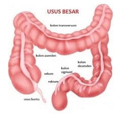

Usus Besar
Di sebelah kanan dalam rongga perut terdapat usus besar naik, dalam rongga perut sebelah atas terdapat lanjutannya sebagai usus besar melintang, dan dalam rongga perut sebelah kiri dijumpai usus besar turun yang berlanjut sebagai usus besar bentuk “S”. Perhatikan gambar 5.12. Setelah usus besar berbentuk S terdapat poros usus (rektum). Di dalam usus besar sisa-sisa makanan yang tidak dapat dicerna lagi menjadi kental, karena airnya diserap kembali oleh dinding usus besar. Sisa makanan tersebut sampai ke dalam poros usus yang terletak pada dinding belakang panggul kecil. Perjalanan makanan di dalam usus besar dapat mencapai 4 – 5 jam. Namun, di usus besar makanan dapat disimpan sampai 24 jam.

Di dalam usus besar terdapat bakteri Escherichia coli. Bakteri ini membantu dalam proses pembusukan sisa makanan menjadi feses. Selain itu, E. coli juga menghasilkan vitamin K yang berperan penting dalam proses pembekuan darah.